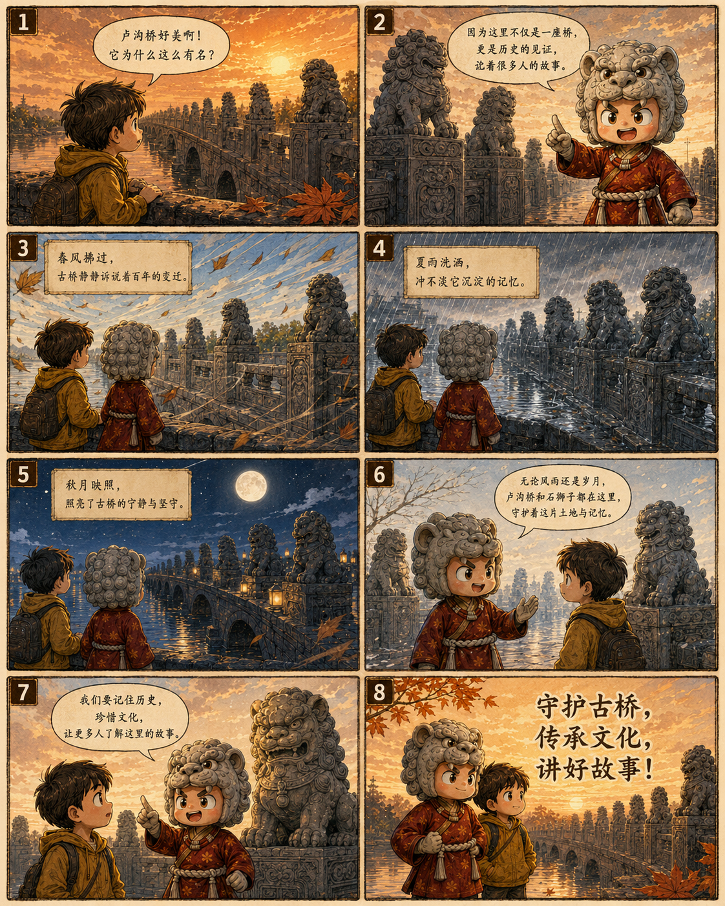
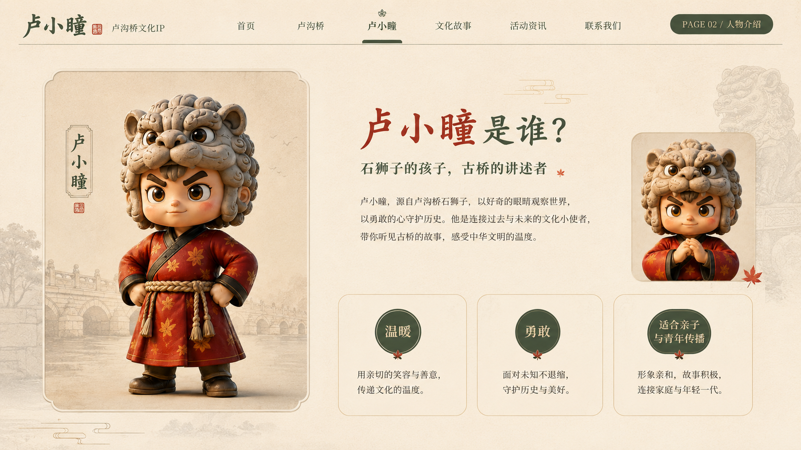

守护古桥 · 传承文脉
卢小瞳
让卢沟桥的故事被看见、被记住、被继续讲述
以卢沟桥石狮子为原型，把石桥、秋色与少年守护者融合为更亲近当代受众的文化IP形象。它不是简单的“卡通化”，而是一次面向青年传播的文化再表达。
LUXIAOTONG IP

About Lugou Bridge
连拱石桥石材肌理、桥洞节奏和桥栏线条共同形成厚重又优雅的古桥气质。
桥栏石狮狮子形态各异，成为卢沟桥最具识别度的视觉资产。
卢沟晓月桥、水、月共同构成流传已久的诗意景观记忆。
卢沟桥：石桥、石狮与历史记忆
卢沟桥因连拱石桥、桥栏石狮与“卢沟晓月”而闻名。它不仅是一座古桥，也承载着建筑美学、地方记忆与公共历史，是具有高度文化辨识度的城市符号。
Cultural Value
文化价值
这一页不再放生硬的整张AI场景图，而是用更干净的版式说明卢小瞳的传播价值：让卢沟桥从“历史知识点”变成更容易被记住的“文化记忆点”。
降低文化距离
用亲和的IP形象承接卢沟桥的历史厚度，让观众先愿意靠近，再进一步理解古桥、石狮与历史记忆。
建立视觉识别
提取石狮、桥栏、月色、秋叶等元素，形成统一的视觉记忆，让卢小瞳具有清晰的文化来源。
适合多端传播
形象可延展到网页、展板、海报、PPT、文创与新媒体内容中，服务完整的文化宣传链路。
守护古桥 · 传承文化 · 讲好故事
让传统文化以更温暖、更克制、更有记忆点的方式被看见。